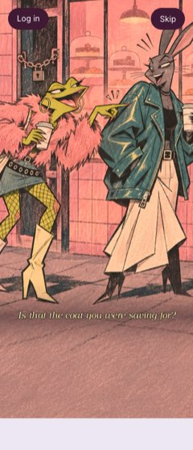
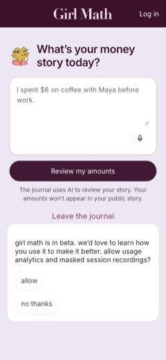
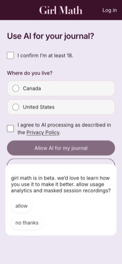
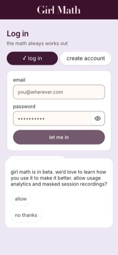
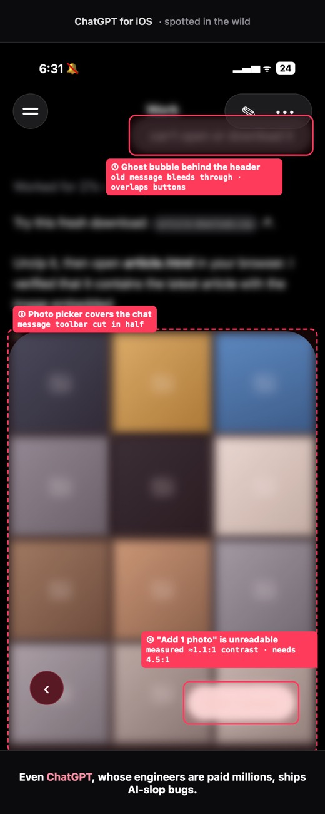

Agent Manuel does your
manual testing.
Paste your URL. Agents tap every button, try every path and check every screen, then show you exactly what's broken.




Three checks on every screen
The computer measures the real page. Then each screen is judged on its own.
- Is the main action the strongest thing?
- Is it flat, with everything the same weight?
- Is too much going on?
- Text too faint for its background
- Text cut off or clipped
- Text running off the screen
- Text covered by something else
- Edges a few pixels off the column
- Leaves deliberate indents alone
How Manuel explores
Every branch starts fresh. Manuel replays the shortest way back to a screen, then tries one thing it hasn't tried yet. A new screen gets checked. A screen it's seen before is just noted.
How the agent swarm works
Exploring an app is a big map of screens joined by taps. One worker walking it is slow, so a swarm splits the map between many workers who share one notebook: every screen found, every tap tried, who's doing what, and what's wrong on each screen.
| Explorers | Claim an untried tap so no one else takes it, try it, and write down where it led. | one today |
| Checkers | When a new screen appears, run alignment, hierarchy and readability on it, at phone and desktop width. | built |
| Verifier | Before a problem counts, reproduce it from a fresh start, so flukes don't count. | next |
| Tricksters | Revisit screens with awkward moves: blank input, very long text, double-tap, refresh mid-save. | next |
| AI judge | Reads each screen's markups and measurements, and says what's confusing or unreadable, citing the numbers. | soon |
| Personas | Play a real user with one goal and report every surprise and dead end. | soon |
Persona journeys
An AI plays a real kind of user with one goal. On every screen it says what it expects to happen, then checks whether the app did that. Every surprise is a sign the design is confusing.
Goal: log today's coffee and see where her money went
SURPRISE: expected her amounts, got a 4-question form
STUCK: can't find a way out

Even ChatGPT ships these.
Recreated from a real screenshot of the ChatGPT iOS app.
- An old message bubble sits on top of the header buttons
- The photo picker opens over the chat and cuts the toolbar in half
- "Add 1 photo" is almost invisible: about 1.1:1 contrast
Stop clicking through your own app.
npx agent-manuel run https://your.app